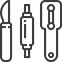

Как и где восстановить брендовую сумку в Москве?
Любимая сумка выглядит не как новая? Появились пятна, царапины, цвет стал менее ярким? Если готовы рискнуть, можете попытаться восстановить внешний вид самостоятельно или отдать сумку в ближайшую мастерскую. Но стоимость ошибки большая, как и цена изделия. Реставрацию дорогой сумки лучше доверить профессионалам.
Уже много лет мы реставрируем сумки люксового сегмента: восстанавливаем цвет, устраняем потертости и порывы, порезы, меняем фурнитуру. Используем фирменные материалы, оригинальные детали. Гарантируем качество работы.
наши преимущества
-

Ремонт сумок всех брендов
Восстанавливаем сумки известных брендов: Balenciaga; Bottega Veneta; Burberry; Celine; Chanel; Chloe; Coach; Dior; Fendi; Goyard; Gucci; Louis Vuitton; Prada; Saint Laurent; Hermes и других.
-

Ремонт сумок любой сложности
У нас вы можете заказать профилактический SPA-уход для сумки или глубокую реставрацию с заменой деталей.
-
Гарантия качества
Несем полную финансовую ответственность за качество работы и сохранность изделия.
-

Работа с деликатной кожей
Кожа питона, крокодила, страуса и другие виды редкого материала.
-

Доставка курьером
Нет времени привезти сумку в мастерскую? Наш курьер сделает это за вас.
-

Предпродажная подготовка бесплатно
Услуга подготовки сумки для продажи в подарок всем, кто реализует изделие под комиссию на нашем сайте.
Проверить подлинность сумки в Москве
Восстановление, ремонт сумок: услуги мастерской
У нас работают лучшие мастера по реставрации сумок люксового сегмента. Они используют премиальные материалы и гарантируют качество работы.
-

Профилактический SPA-уход для любимой сумки
-
Чистка сумки: полная, отдельных элементов или подкладки
-
Реставрация царапин, пятен
-
Ремонт замков, защелок и прочей фурнитуры
-
Замена кнопок, люверсов, молний, бегунков
-
Восстановление цвета, устранение неглубоких царапин и потертостей
-
Подклейка сумки
-
Замена ручек, обновление подкладки, углов сумки
-
Прошивка швов, реставрация дыр и порезов
-
Восстановление формы у жестких сумок
Брендовые сумки имеют узнаваемый во всем мире дизайн. Главная задача мастера по ремонту — сохранить уникальный дизайн, не нарушить конструкцию изделия, декор, цвет, фактуру. После реставрации швы, оттенок материала, форма должны соответствовать новой сумке.
Для этого мы используем фирменные материалы, фурнитуру и гарантируем премиальное качество работы. Ваша сумка станет как новая!
Ювелирный дом «На Фрунзенской» специализируется на работе с украшениями премиум-сегмента. Наши мастера – лучшие в своем деле. И это факт! Они сотрудничают с ведущей биржей Израиля. Именно там топовые часовые и ювелирные компании инкрустируют изделия драгоценными камнями.
Также наш дом является официальным брокером алмазной биржи RapNet. Это значит, что мы можем заказать для вас любой камень на любой бюджет, чтобы сделать по-настоящему эксклюзивное украшение. В каталоге мастеров кольца, браслеты, серьги, колье с бриллиантами, изумрудами, сапфирами, рубинами, танзанитами. Каждое – уникально и создано в единственном экземпляре.
Ювелирная мастерская поможет вам и с ремонтом брендовых украшений Сartier, Van Сleef, Tiffany, Bvlgari, Chopard. Гарантируем первоклассный сервис и быстрое обслуживание.
Комсомольский проспект дом 42 строение 1
Режим работы: 09:00-21:00 без выходных.
Для согласования более позднего времени визита,
пожалуйста, записывайтесь заранее.